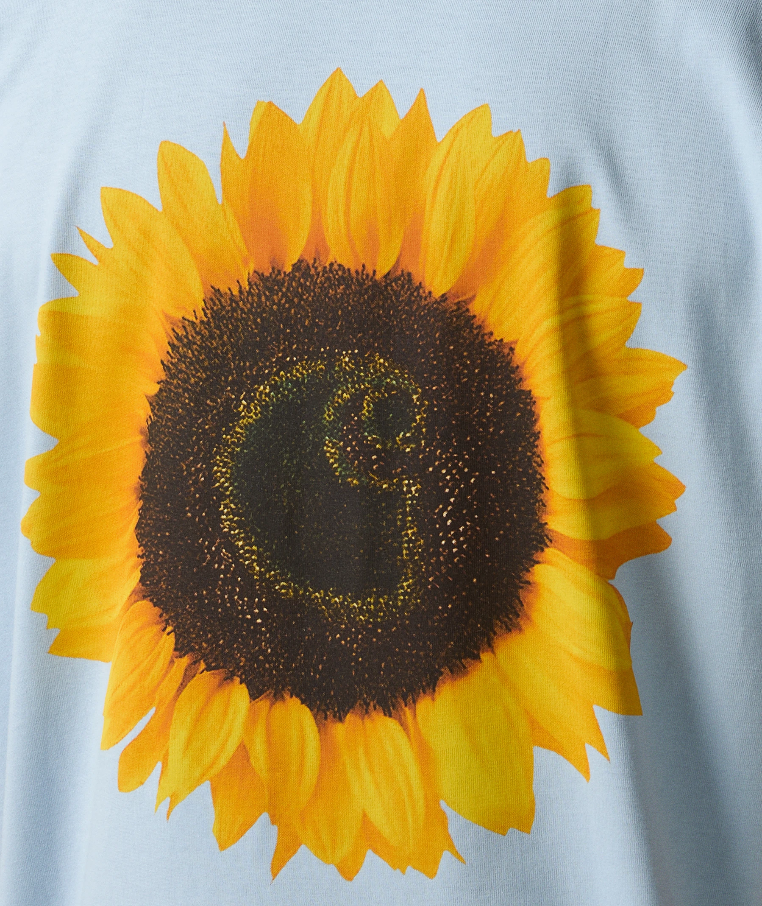
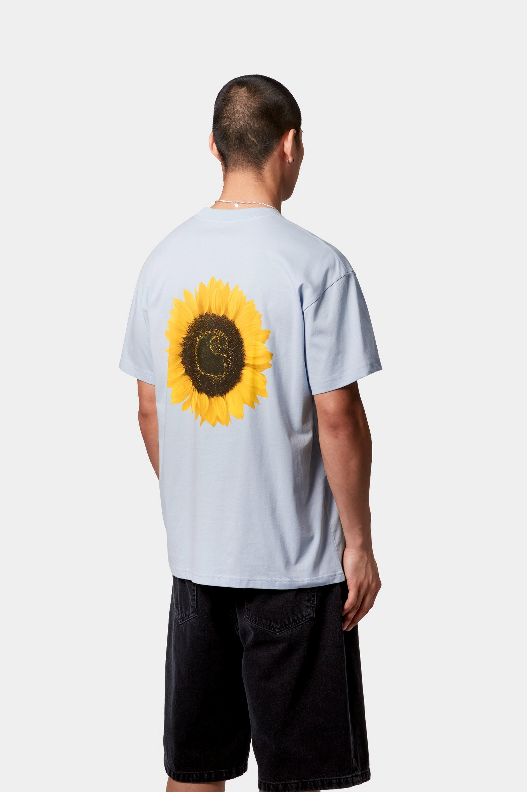
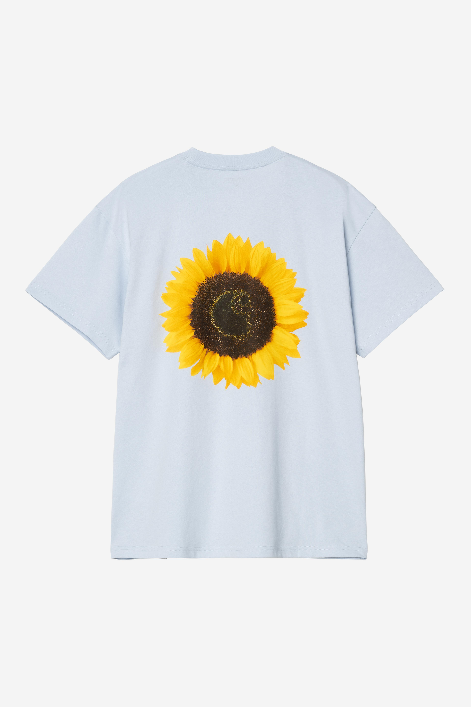
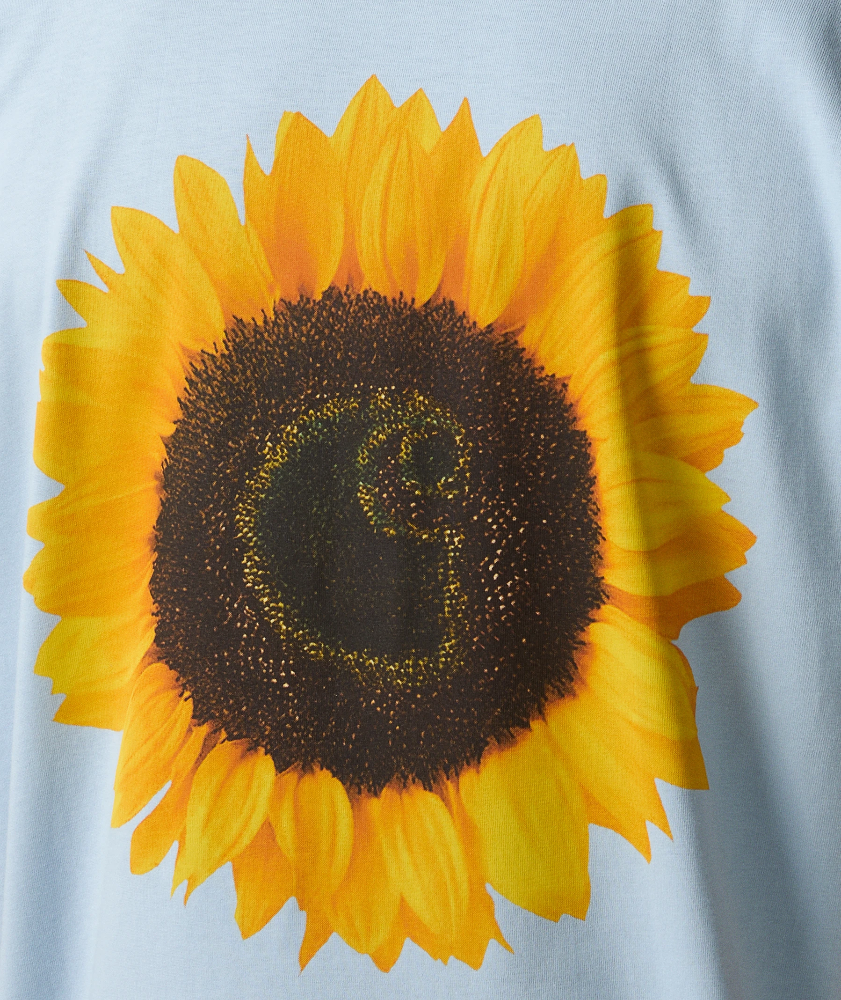
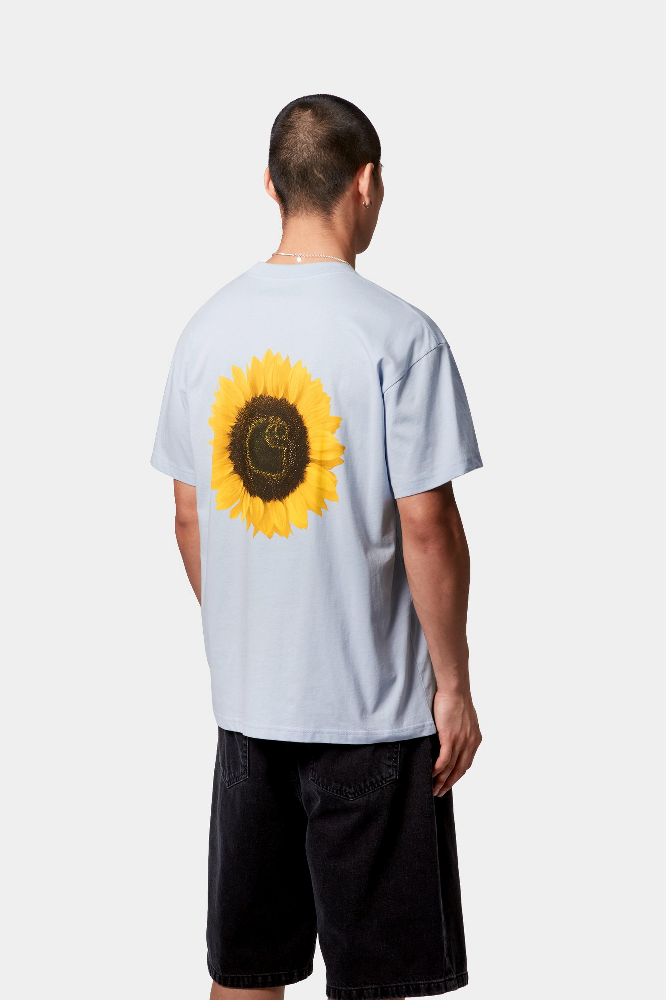
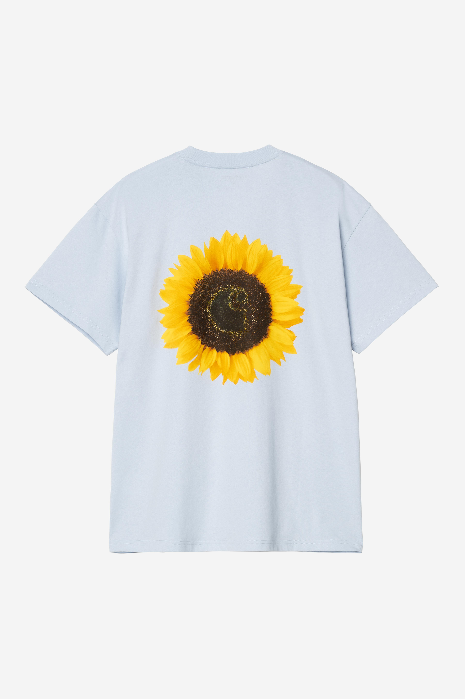

Carhartt WIP S/S Sunflower T-Shirt Air Sky
Composition : 100 % coton biologique, jersey léger
Coupe : Loose fit, manches courtes
Détails : Imprimés graphiques devant et dos
Version estivale parfaite, en bleu pastel “Air Sky”, douce et confortable pour les journées chaudes.